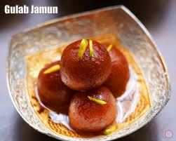

GulabJamun
Ingredients
- 1 Nestlé MILKMAID Mini Flour
- 2 cups (200 gm) 600 gms Grated Paneer
- 200 gm Sooji/Rava 1½ tsp Baking Powder
- For Frying Oil
- 1 kg Sugar
Recipe
- Step 1: Boil sugar and water to prepare syrup and remove from the fire. Add cardamom and keep aside to cool.
- Step 2: In a mixing bowl, add the flour, paneer, sooji, Nestlé MILKMAID, baking powder, and baking soda. Mix gently to make a soft dough. Do not knead too much.
- Step 3: Divide the mixture into 30-35 portions and gently roll into round Gulab Jamuns. Fry in the oil at a very low flame till golden brown.
- Step 4: Add the fried Gulab Jamuns to the prepared sugar syrup. Once all the Gulab Jamuns are in the sugar syrup, bring it to a boil and remove from the flame.
- Step 5: Serve warm.
